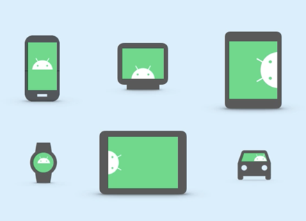
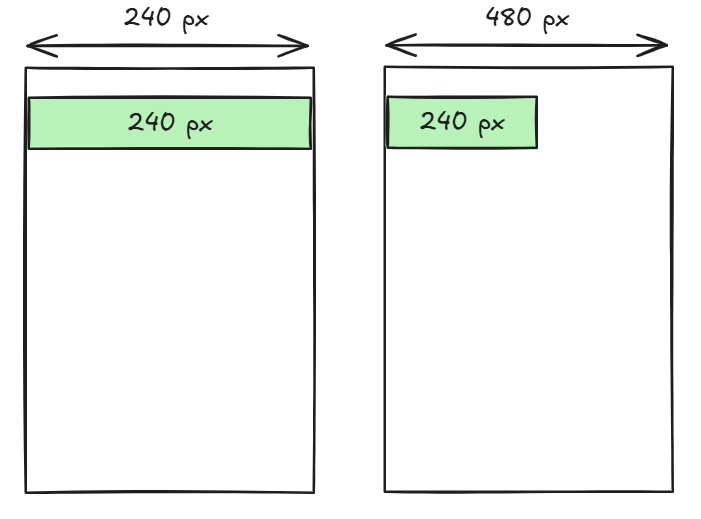
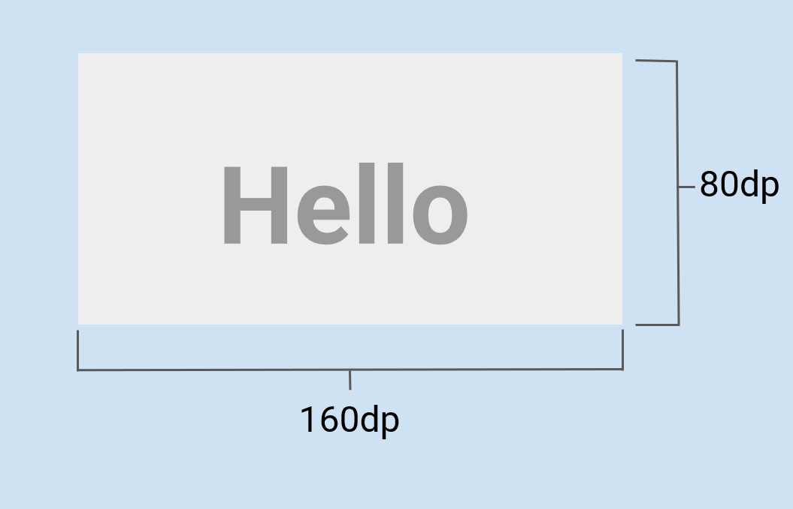
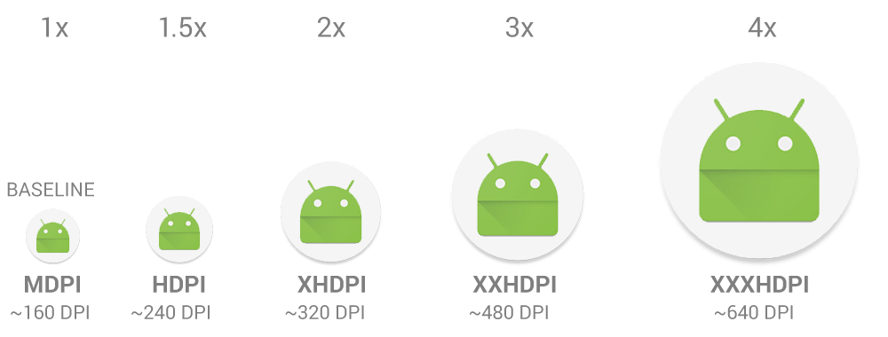
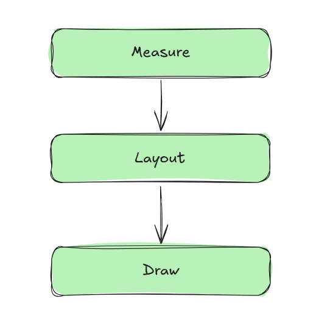
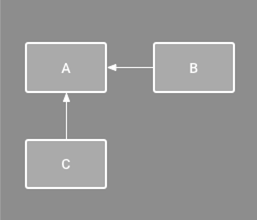
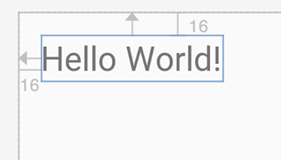
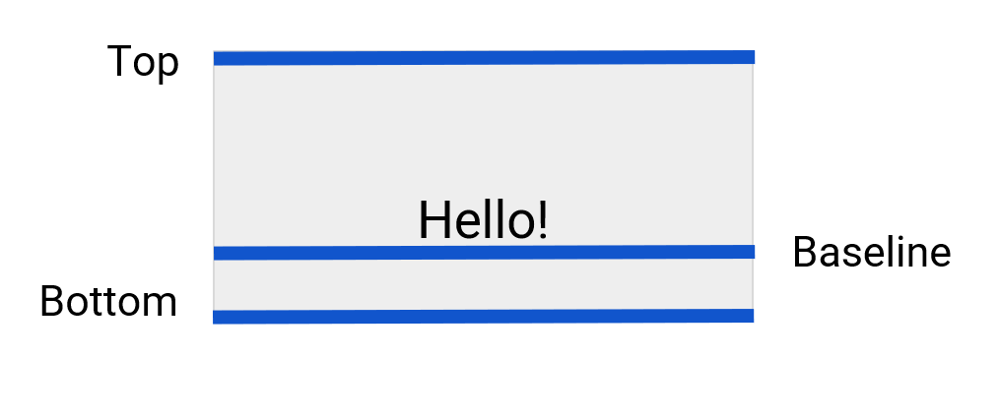
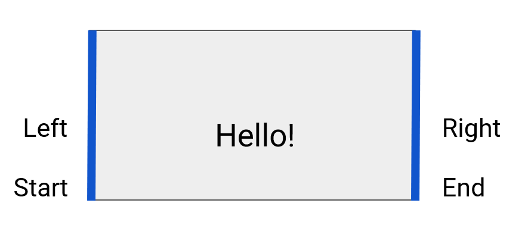
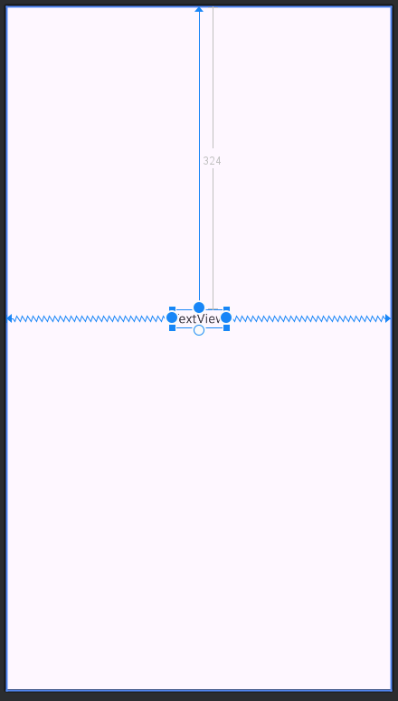

Макеты элементов пользовательского интерфейса (Layout)
Одной из проблем при разработки приложения является адаптация элементов экрана (пользовательского интерфейса) под устройства с разными характеристиками экранов.

Рис. 1. Различные размеры экранов устройств Android.
Что такое px, думаю, тоже понятно. Если у вас есть устройство с экраном шириной 480 px и вы создали кнопку шириной 240 px, то эта кнопка займет в ширину ровно пол-экрана. Но если вы откроете ваше приложение на устройстве с экраном с меньшим разрешением, то соотношение изменится, например:
если разрешение
320х240, ширина экрана =240 px. Кнопка займет уже не пол-экрана в ширину, а весь экранесли же разрешение
1280х800, ширина =800 px. Кнопка опять же будет занимать в ширину не пол-экрана, а чуть меньше трети

Рис. 2. Различные размеры экранов устройств Android.
Density-independent pixel (dp)
Относительный параметр (не зависящий от плотности экрана пиксель) был введен во избежании проблем с компановкой элементов внутри разного размера экранов пользовательского оборудования.

Рис. 3. Размеры ширины и высоты TextView в dp.
Данный параметр учитывает плотность пикселей (Pixel per Inch - PPI) экрана или screen density.
Все Android-виджеты измеряются в относительных величинах (dp).
160- средняя плотность пикселей (baseline density);width_pixels- ширина экрана, например 1920x800, 800 - ширина;density_screen- плотность пикселей.

Рис. 4. Наглядный пример отображения плотности пикселей (PPI).
Чтобы обеспечить хорошее качество изображений на устройствах с разной плотностью пикселей, предоставьте в приложении несколько версий каждого растрового изображения — по одной для каждого диапазона плотности с соответствующим разрешением. В противном случае Android придётся масштабировать растровое изображение так, чтобы оно занимало одинаковое видимое пространство на каждом экране, что приведёт к появлению артефактов масштабирования, таких как размытие.
Таблица. 1. Разделение на группы по параметру DPI.
Density qualifier |
DPI estimate [ |
Description |
|---|---|---|
|
~120 (x0.75) |
low-density |
|
~160 (x0.1) |
medium-density ( |
|
~240 (x1.5) |
high-density |
|
~320 (x2) |
extra-high-density |
|
~480 (x3) |
extra-extra-high-density |
|
~640 (x4) |
extra-extra-extra-high-density |
|
- |
Не зависят от плотности. |
Т.е. когда для экрана стоит режим mdpi, то 1 dp = 1 px. Т.е. кнопка шириной 100 dp будет выглядеть также как и кнопка шириной 100 px.
Если, например, у нас экран с низким разрешением, то используется режим ldpi. В этом случае 1 dp = 0,75 px. Т.е. кнопка шириной 100 dp будет выглядеть так же как кнопка шириной 75 px.
Если у нас экран с высоким разрешением, то используется режим hdpi или xhdpi. 1 dp = 1, 5 px или 2 px. И кнопка шириной 100 dp будет выглядеть так же как кнопка шириной 150 px или 200 px.
Т.е. при различных разрешениях используются различные Density режимы, которые позволяют приложениям масштабироваться и выглядеть если не одинаково, то, по крайне мере, похоже на всех экранах.
Ниже показан пример нескольких версий растрового изображения.

Рис. 6. Несколько изображений под каждую группу DPI.
В ресурсах проекта (директория res/) файлы должны находится в своих dpi-группах:
res/
drawable-xxxhdpi/
awesome_image.png
drawable-xxhdpi/
awesome_image.png
drawable-xhdpi/
awesome_image.png
drawable-hdpi/
awesome_image.png
drawable-mdpi/
awesome_image.png
Процесс отображения (Rendering) виджетов
Перед тем как Android-приложение покажет вам свое первое Activity, выполняется еще несколько основных функций\методов работы с изображением:
Measure- вычисление точного местоположения каждого виджета на экране;Layout- выравнивание виджетов относительно “макета\компановки” (layout manager);Draw- отрисовка\рендер изображения.

Рис. 7. Android View rendering cycle.
View
Android SDK включает множество виджетов, которые являются дочерним классом класса View. Таким образом, каждый виджет является экземпляром класса View, как и отражено на рисунке ниже.

Рис. 8. Иерархия класса View. Источник изображения.
{kind=link}
Constraint Layout
Constraint - если коротко, это некие ограничения свойств виджета (или view) внутри constraint layout.

Рис. 9. Пример ограничений элементов B и С.
Например, можно задать относительную (к родительскому layout) позицию виджета:
app:layout_constraintBottom_toBottomOf="parent"
app:layout_constraintEnd_toEndOf="parent"
app:layout_constraintStart_toStartOf="parent"
app:layout_constraintTop_toTopOf="parent">
Получим относительное положение виджета (на 16 dp) к краям ConstraintLayout:

В данном случае происходит следующее: “TextView выравнивает свою верхнюю границу к верхней части ConstraintLayout на 16 dp, а левую границу к левой части ConstraintLayout”.
Существует несколько относительных позиций ConstraintLayout:

Рис. 10. Top, Bottom, Baseline.
Где baseline - это нижняя граница текста внутри TextView.

Рис. 10. Left, Right.
Пример Constraing Layout
<androidx.constraintlayout.widget.ConstraintLayout xmlns:android="http://schemas.android.com/apk/res/android"
xmlns:app="http://schemas.android.com/apk/res-auto"
xmlns:tools="http://schemas.android.com/tools"
android:id="@+id/back_to_main"
android:layout_width="match_parent"
android:layout_height="match_parent"
tools:context=".activities.MediaPlayerActivity">
<TextView
android:id="@+id/textView3"
android:layout_width="wrap_content"
android:layout_height="wrap_content"
android:layout_marginTop="324dp"
android:text="TextView"
app:layout_constraintEnd_toEndOf="parent"
app:layout_constraintStart_toStartOf="parent"
app:layout_constraintTop_toTopOf="parent" />
</androidx.constraintlayout.widget.ConstraintLayout>
